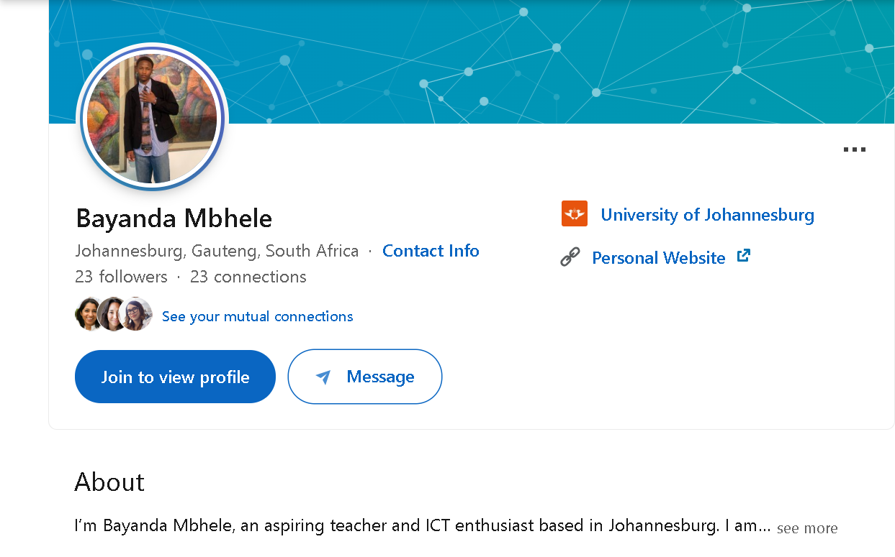
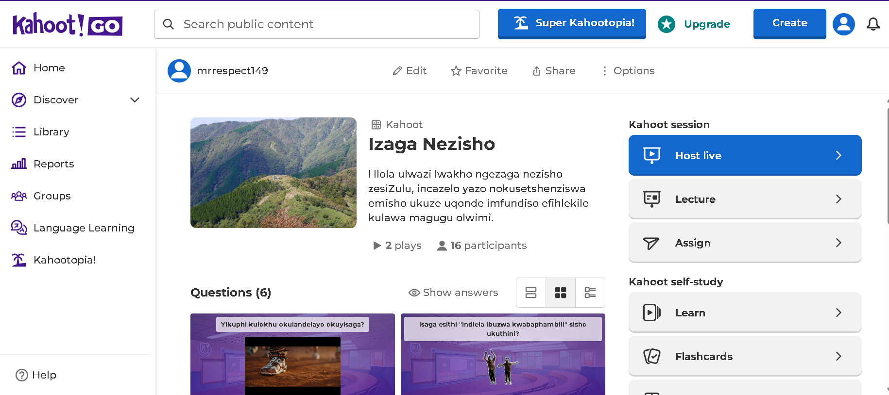
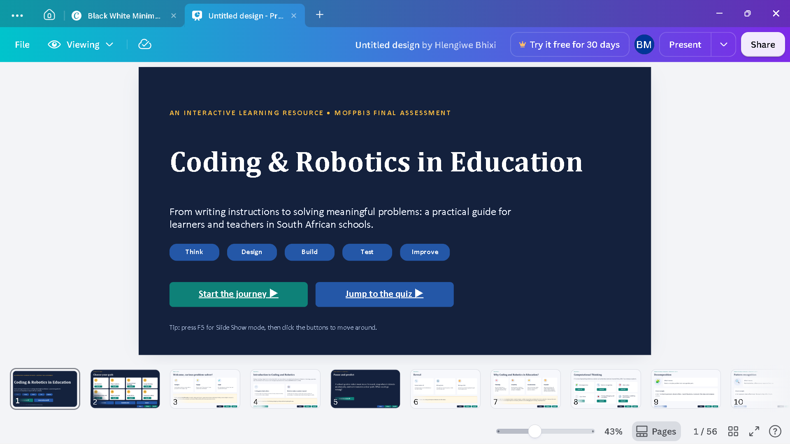
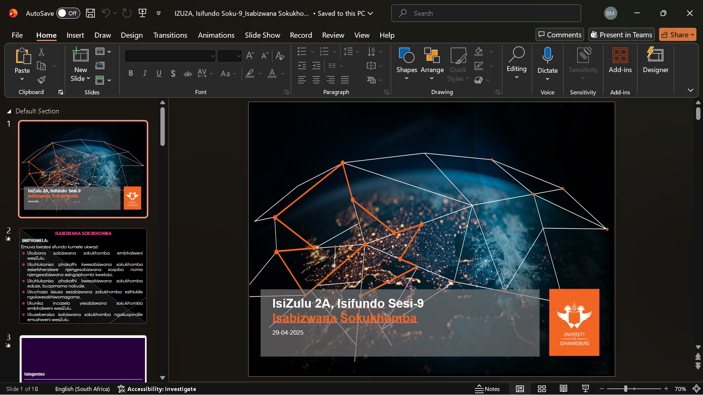

My Professional Learning Network
My name is Bayanda Sbahle Mbhele, a third-year Bachelor of Education student at the University of Johannesburg. I train to teach isiZulu First Additional Language and Computer Applications Technology (CAT).
A Professional Learning Network (PLN) is the group of people, communities, tools and resources I use to keep learning as a teacher. This semester I built my own PLN. This portfolio shows who is in it, the tools I use, the resources I curated and how it helps me grow. It also shows how I plan to keep growing it after I graduate.
My professional digital identity


My About.me (link) page is my main professional profile online. It gives anyone who searches for me one place to see who I am as a teacher. It shows that I study at UJ, that I teach isiZulu and CAT, and it links to Facebook, Instagram, LinkedIn and Pinterest.
I kept the page simple, with a clear photo and a short bio, so it looks professional. Principals, colleagues and learners can find me online, so I only share content that suits the teaching profession. I will update the page as I gain new qualifications and experience.
My PLN connections and communities
My PLN has people, groups, organisations and online platforms. The people include lecturers, mentor teachers from WIL, classmates. The groups include WhatsApp study groups, Facebook groups for isiZulu and CAT teachers. The organisations include UJ Faculty of Education. On social media, I use LinkedIn, YouTube, Facebook to follow educators and learn from what they share.
These connections help me with both of my subjects and with general skills like classroom management and lesson planning.


PLN tools, apps and services
I kept the tools I really use. Each entry answers the same questions: why I use it, its purpose, how it helps me learn, my evidence, the value it added and how it links to the rest of my PLN.
LinkedIn Social networking
I use LinkedIn to build a professional profile and connect with educators. Its purpose is to show my qualifications and let me follow people in education. It adds to my learning because I read posts from teachers and see how their careers grow. My evidence is screenshot of my profile and connections. It added value because it displays my professionalism. It connects with About.me, which links to my LinkedIn.

Facebook Social networking
I use Facebook to join teacher groups, because South African teachers share resources and ask for help there. Its purpose is community support. I see real classroom problems and how experienced teachers solve them. My evidence is a screenshot of my groups. It added value because I got a chance to learn from people who know better. It connects with my WhatsApp study groups, where I share what I find.

About.me Professional identity
I use About.me as my central professional profile. Its purpose is to give anyone who searches for me one page that shows who I am as a teacher. It made me think about how I present myself. My evidence is screenshot of my page. It added value because I can send one link instead of many. It links to LinkedIn and my other profiles.
WhatsApp Communication
I use WhatsApp to talk to classmates, lecturers and study groups. Its purpose is fast communication and file sharing. I get answers quickly and learn from my peers’ questions. My evidence is a screenshot of a study group chat and a conversation with my mentor teacher.
Scoop.it Content curation
I use Scoop.it to collect and organise articles on Mastering Digital Landscape. Its purpose is content curation. I have to read, choose and group resources, which builds my judgement. My evidence is a screenshot of my topic page. It added value because I now have multiple resources I can use in lessons. It connects with my Weeks 1 and 2 curation work.

Kahoot Teaching and learning
I use Kahoot to make quiz games for learners. Its purpose is to make lessons interactive and check understanding. I practise writing good questions and I see which topics learners struggle with. My evidence is a screenshot and a link of my quiz. It added value because it made my lessons more engaging. It connects with PowerPoint, because the quiz sits at the end of my slides.

Click here to access Click here to access
Click here to access
Microsoft Educator Center Professional development
I use the Microsoft Educator Center because I need digital skills for teaching CAT, and the courses are free and short. Its purpose is to help teachers learn classroom technology and prove it with badges. My evidence is a screenshot of my profile, courses and badges. It added value because it helps you gain more 4IR skills you need as a teacher to make learning easier for students.


Canva Content creation
I use Canva to design posters, ebooks or slides. Its purpose is to make my resources clear and professional. I practise designing for learners, with simple layouts and readable text. My evidence is the slides for CAT i created for my learners. It added value because it made learning and teaching easier. It connects with PowerPoint and Google Sites, where I use my designs.


PowerPoint Content creation
I use PowerPoint to build lessons and presentations. Its purpose is to organise and present content to learners. I practise structuring a lesson from introduction to conclusion. My evidence is a screenshot of my isiZulu lesson slides. It connects with Kahoot, because I add quizzes to my slides.

How my tools connect
- About.me links to LinkedIn and my other profiles.
- WhatsApp groups carry the resources I store in Google Drive and curate on Scoop.it.
- Kahoot quizzes sit at the end of my PowerPoint lessons.
- Canva designs go into PowerPoint and this site.
- Google Sites holds the evidence from every other tool.
Resource curation and management (Weeks 1 and 2)

Click here to access my Google Drive
I organised my resources in Google Drive using folders. I can find any resource in a few clicks.
Academic resources
- Msomi, E. M. (2024). Izingqinamba ezibhekana nothisha abafundisa isiZulu ULimi LokuQala LokwEngeza. Journal for Language Teaching, 58(2). https://doi.org/10.56285/jltVol58iss2a5931
Why it helps me: It shows me the real problems isiZulu FAL teachers face in schools, so I can plan for them before my first class. - Ntshangase, S. Z. (2022). Interactive pedagogy elevating learners as producers of knowledge in the isiZulu classroom. South African Journal of Education, 42(2). https://doi.org/10.15700/saje.v42n2a2095
Why it helps me: It gives me interactive methods for the isiZulu classroom, like group work and learner presentations, so learners take part instead of only listening. - Moodley, K., Callaghan, P., Fraser, W. J., & Graham, M. A. (2020). Factors enhancing mobile technology acceptance. South African Journal of Education, 40(S2). https://doi.org/10.15700/saje.v40ns2a1791
Why it helps me: It explains what makes teachers accept new technology, which helps me bring tools like Kahoot into my CAT lessons. - Tachie, S. A. (2019). Challenges and opportunities regarding usage of computers in the teaching and learning of Mathematics. South African Journal of Education, 39(S2). https://doi.org/10.15700/saje.v39ns2a1690
Why it helps me: It warns me that limited computer access and weak skills can hold lessons back, so I plan CAT activities that still work when resources are short. - Zikhali, T. Y. (2016). Teaching isiZulu first additional language to isiZulu mother-tongue learners in former Model C high schools (Master's thesis, University of KwaZulu-Natal). http://hdl.handle.net/10413/15417
Why it helps me: It shows that isiZulu FAL teachers often lack training and materials, and it makes me want to build my own resource bank early.
Educational videos
- Education with Mr. Hambury. Theory Revision - CAT Term 2 - Grade 10. https://youtu.be/zmMZ-p4vyuE?si=CW4rqa3vJWDjsVdm
Why it helps me: It gives me a clear way to explain CAT theory to Grade 10 learners and a model for my own revision lessons. - Education with Mr. Hambury. Grade 10 CAT Practical Exam Guide 2025. https://youtu.be/mfAE-CUxFfM?si=UMmBwIK1ZQi03xCE"
Why it helps me: It shows me which practical skills learners need to practise, so I can focus my lessons on them. - Grade 10 CAT Netiquette lesson video. https://youtu.be/28Amb-xIYe8
Why it helps me: It shows me how a teacher uses slides in a real lesson, which I can copy when I teach e-communication.
Teaching resources
- Department of Basic Education. CAPS: Computer Applications Technology, Grades 10-12. View the CAPS document
How I use it: I use it to check what I must teach and assess in each term, so my lesson plans match the curriculum. - Western Cape Education Department. CAT Gr. 10 Lesson T2 W7: Spreadsheets. View the lesson
How I use it: I use it as a ready model for a CAT practical lesson, and I adapt its structure for my own plans.
AI-discovered resources I verified
Zikhali (2016) thesis.Author and institution: Thobeka Zikhali wrote it for a master’s degree at the University of KwaZulu-Natal in 2016. Peer reviewed: it is a university thesis, so a supervisor and examiners assessed it, but it did not go through a journal’s blind peer review. That makes it a weaker source than a journal article, so I treat its findings with care. Date: it is a decade old, but the problems it describes still match what newer research reports. A 2024 article found that isiZulu FAL teachers still face many challenges because the language is not taken seriously. Second source that agrees: a UKZN study by Shawe found that teachers are not well trained for the CAPS curriculum and that textbooks and workbooks are not available. That matches Zikhali’s finding that teachers lack proper training and suitable teaching material. CAPS fit: it is useful for understanding the FAL context, but it studies Grade 8 learners who start isiZulu for the first time in Durban schools. I teach Grades 10 to 12 and may work in Gauteng, so I use it as background and not as a guide for my lessons.
Moodley et al. (2020) article. Author and institution: the authors work at the University of Pretoria. It appeared in the South African Journal of Education in 2020. Peer reviewed: the journal is the official journal of the Education Association of South Africa, and it is indexed in the Social Sciences Citation Index, Scopus, and the DHET list of accredited South African journals. That tells me it meets a high standard. I could not find the words “peer reviewed” on the pages I checked, so before I submit I will read the journal’s “Instructions to authors” page and confirm the review process. Date: it is six years old, which is recent enough. The finding that teachers accept technology when they get training still applies, but the specific apps will have changed. Second source that agrees: Tachie (2019), in the same journal, found that many teachers lack the skills and have limited access to computers. Because both come from the same journal, I would also like a source from outside it. CAPS fit: the study looks at 15 teachers at one Pretoria secondary school, after a mobile technology workshop. It does not cover CAT content, but it supports the CAPS idea of using technology in lessons, so it helps me plan how to bring tools into my teaching.
For the AI-discovered resources, I did not trust them straight away. I checked who wrote them, when they appeared, and whether other reliable sources agreed. Curating this way taught me to choose quality over quantity. I will have a ready bank of materials when I start teaching.
Week 3 reflection: how a PLN can support my growth over five years
Click here to access my Week 3 reflection on Google Drive
In my first year of teaching, my PLN will be my safety net. I can ask experienced teachers for advice on lesson planning, discipline and assessment when I feel stuck.
In years two and three, I will use it to grow in my subjects. For isiZulu, I can learn new ways to teach language and literature. For CAT, I can keep up with changing technology.
By year five, I hope to give back by sharing my own resources and helping new teachers. My PLN will also tell me about workshops, courses and job opportunities. A strong network means I never have to figure out teaching alone.
Week 4 reflection: digital curation then and now
How curation has changed
Click here to access my Week 4 reflection on Google Drive
When the article appeared, teachers mostly collected links and bookmarks by hand. Today we can save, sort and share resources in seconds, and AI can suggest content for us. There is also far more content online, so judging quality matters more than finding it.
Tools that still matter
[Name the tools from the article that still work today and say why].
Modern tools that could improve curation
[Tools like Google Drive, Padlet, Canva or an AI assistant]. They help me organise faster, sort resources by topic and share them with other teachers.
AI supports my judgement but does not replace it
AI can find resources quickly and summarise them. It can also make mistakes, show bias or suggest content that does not match the CAPS curriculum. I must check the source, the facts and whether the resource fits my learners. AI is my assistant. I am the teacher who decides what goes into my classroom.
Week 9 reflection (Activity 3)
Click here to access my Week 9 reflection on Google Drive
This reflection matters to my professional learning because [what you learned]. It showed me [a strength or a gap]. I will use it in my teaching by [one concrete action]. It also connects to my PLN because [a group, tool or person who can help].
Professional artefacts and contributions
This section shows work I created and ways I took part in my PLN. My artefacts include [my isiZulu lesson presentation with a Kahoot quiz, my Coding and Robotics in Education ebook, my CAT lesson plan on Introduction to HTML]. Each one shows a different skill: [lesson design, using technology, creating digital content]. I also took part in [groups or communities] by [asking questions, sharing resources, answering others].

I created this PowerPoint lesson for Grade 10 IsiZulu learners, focusing on *Izaga nezisho*. The presentation was designed to help learners understand the meaning of different idioms and proverbs and how they are used in everyday communication. I also included a Kahoot quiz to test learners' understanding, encourage participation and make the lesson more interactive. This demonstrates my ability to prepare CAPS-aligned learning materials and incorporate digital tools into my teaching. It connects to my Professional Learning Network (PLN) because I used ideas and teaching resources from online educational platforms and digital communities to guide my lesson preparation and explore ways of making language lessons more engaging.
I developed this eBook to introduce learners and teachers to Coding and Robotics and explain how these technologies can be used to support teaching and learning. The purpose was to make the information easier to understand through interactive digital content, examples and educational activities. Creating the eBook demonstrates my ability to use digital tools to design engaging learning materials and present information in a creative way. It connects to my Professional Learning Network (PLN) because I used resources and knowledge gained through online educational platforms, digital tools such as Canva, and information shared by other educators to guide the development of my content.

I planned this Grade 10 Computer Applications Technology (CAT) lesson on HTML, which was presented on 4 September 2026. The lesson was designed to introduce learners to the basics of HTML and help them understand how it is used to create and structure web pages. It demonstrates my ability to plan a practical lesson that supports the CAPS curriculum while giving learners an opportunity to develop basic web development skills. It connects to my Professional Learning Network (PLN) because I used online learning resources, HTML tutorials and educational platforms to gather information and ideas that helped me prepare the lesson.
My curriculum vitae (Week 10)
My CV shows my education, my teaching subjects, my school experience and my digital skills. My PLN supports every part of it. The groups I joined improved my subject knowledge. The tools I use built digital skills that schools value. My curated resources and artefacts show that I prepare well and reflect on my work.
Conclusion: future growth of my PLN
This semester I went from having no PLN to having a network of people, tools and resources that support my teaching. I now know how to curate resources, check them carefully and use technology to learn.
My next goals are to join one more professional community for isiZulu teachers, share at least one resource each term and keep my About.me page and CV up to date. I will keep growing my PLN throughout my career.
References
Department of Basic Education. (2011). Curriculum and assessment policy statement (CAPS): Computer applications technology, Grades 10-12. https://www.education.gov.za/Portals/0/CD/National%20Curriculum%20Statements%20and%20Vocational/CAPS%20FET%20_%20COMPUTER%20APPLICATIONS%20TECHNOLOGY%20_%20GR%2010-12%20_%20Web_6AC6.pdf
Education with Mr. Hambury. ([year]). Grade 10 CAT practical exam guide 2025 [Video]. YouTube. [paste link]
Education with Mr. Hambury. ([year]). Theory revision - CAT Term 2 - Grade 10 [Video]. YouTube. [paste link]
Moodley, K., Callaghan, P., Fraser, W. J., & Graham, M. A. (2020). Factors enhancing mobile technology acceptance. South African Journal of Education, 40(S2), Article 1791. https://doi.org/10.15700/saje.v40ns2a1791
Msomi, E. M. (2024). Izingqinamba ezibhekana nothisha abafundisa isiZulu ULimi LokuQala LokwEngeza. Journal for Language Teaching, 58(2), Article 5931. https://doi.org/10.56285/jltVol58iss2a5931
Ntshangase, S. Z. (2022). Interactive pedagogy elevating learners as producers of knowledge in the isiZulu classroom. South African Journal of Education, 42(2), Article 2095. https://doi.org/10.15700/saje.v42n2a2095
Tachie, S. A. (2019). Challenges and opportunities regarding usage of computers in the teaching and learning of Mathematics. South African Journal of Education, 39(S2), Article 1690. https://doi.org/10.15700/saje.v39ns2a1690
Western Cape Education Department. (n.d.). CAT Gr. 10 lesson T2 W7: Spreadsheets. WCED ePortal. https://wcedeportal.co.za/browse/grades/10/language/english/subjects/computer-applications-technology/topics/spreadsheet-using-basic-spreadsheet-functions
Zikhali, T. Y. (2016). Teaching isiZulu first additional language to isiZulu mother-tongue learners in former Model C high schools [Master's thesis, University of KwaZulu-Natal]. ResearchSpace. http://hdl.handle.net/10413/15417